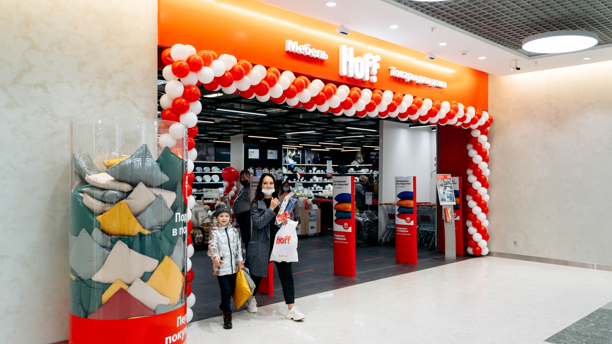

Пелмерин открывает новое заведение для ценителей искусства и культуры!
Мы приглашаем вас в уникальное пространство вдохновения и творчества
Откройте мир Pelmerin и освежите свои эмоции!
Pelmerin - это не просто место, где можно насладиться отличным сервисом, вкусной кухней и уютной атмосферой. Это целая философия, которая сочетает в себе искусство, культуру и гармонию. И мы рады сообщить, что открываем новое заведение, где каждый гость сможет погрузиться в мир Pelmerin и открыть для себя новые грани эстетики. Pelmerin приветствует всех ценителей прекрасного - от любителей живописи до почитателей высокой кухни. Наше новое пространство специально создано для того, чтобы стать убежищем для всех, кто ценит красоту и изысканность. читать дальше
Горячая новость из ресторана Pelmerin!
Ресторан Pelmerin объявляет о запуске уникальной акции, которая порадует всех ценителей изысканной кухни и уютной атмосферы!

С сегодняшнего дня и до конца месяца у нас стартует акция "Фестиваль Вкусов", приуроченная к празднованию годовщины открытия ресторана. Погрузитесь в мир вкусовых открытий и насладитесь разнообразием эксклюзивных блюд, специально созданных нашими талантливыми шеф-поварами для участников акции. Каждый день вас ждут новые гастрономические сюрпризы и удивительные сочетания ингредиентов, которые разгонят скучные будни и подарят незабываемые впечатления. В рамках акции "Фестиваль Вкусов" каждый посетитель ресторана Pelmerin имеет возможность получить специальное меню с уникальными блюдами по привлекательной цене. читать дальше
Первое мероприятие в Pelmeerin!
В пельменной "Pelmerin" состоится уникальное мероприятие
В пельменной "Pelmerin" состоится уникальное мероприятие, которое привлечет любителей пельменей со всего города. Мероприятие будет проходить 1 марта в 18:00. читать дальше